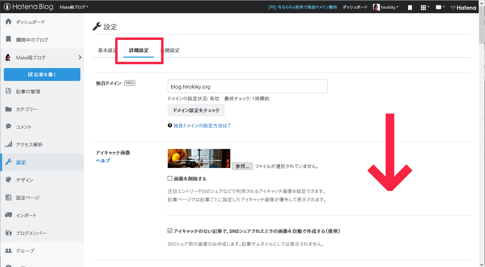
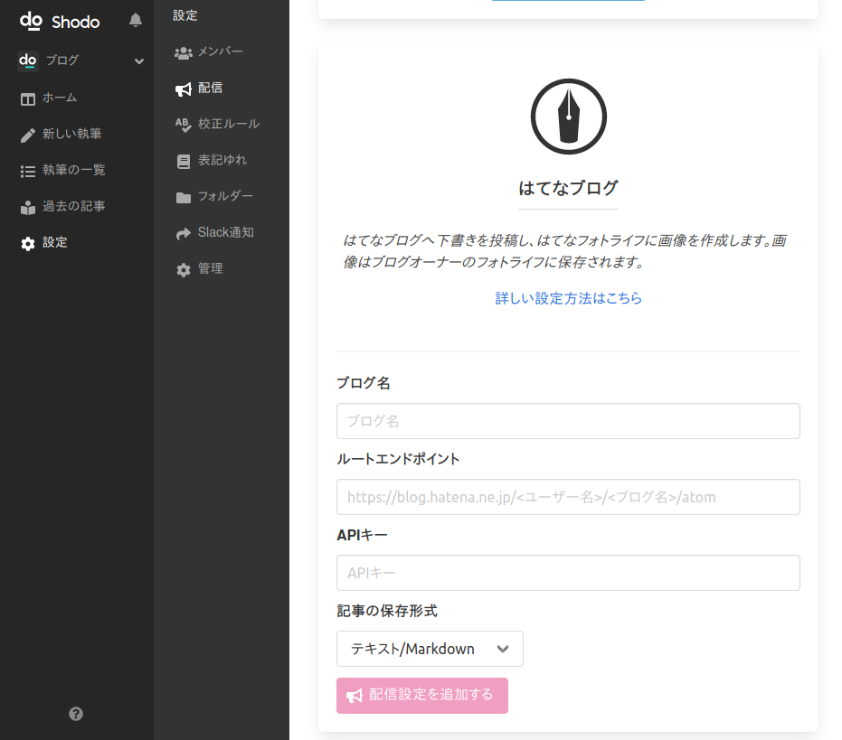

はてなブログとの連携を設定する¶
Shodoで執筆・レビューした記事をはてなブログに投稿できます。 クリック1つで、画像を含めた記事の下書きが作成されます。
はてな連携の注意点¶
以下、連携の設定は、はてなブログのオーナーのみ可能です。
ShodoではShodo内のメンバーが後述するAPIキーをプロジェクト内で共有することで記事の投稿を行います。 投稿される記事は、はてなブログのオーナーアカウントが投稿したことになります。
また、画像はオーナーアカウントの「はてなフォトライフ」に投稿されます。
はてなブログからAtomPubのURLを取得する¶
はてなブログのダッシュボードを開いてください。
はてなのダッシュボードを開く：https://blog.hatena.ne.jp/

画面左の「設定」を開いて、「詳細設定」にアクセスしてください。

画面下部にスクロールして、AtomPubの設定を見つけます。 AtomPubから「ルートエンドポイント」に書かれたURLと、「APIキー」をメモしておいてください。

たとえば https://blog.hatena.ne.jp/hirokiky/hirokiky.hatenablog.jp/atom のようなURLがエンドポイントのURLになります。
Shodoの設定画面にペーストする¶
Shodoの執筆アプリからプロジェクトを選び、サイドバーから「設定」、「配信」をクリックしてください。

ブログの名前と、コピーした「ルートエンドポイント」のURLと「APIキー」を入力してください。 「ブログ名」には任意の名前を入力できます（Shodo内でのみ表示される値です）。
入力できればボタンをクリックすれば設定は完了です。
APIキーの値はShodo内の他メンバーには表示されません。